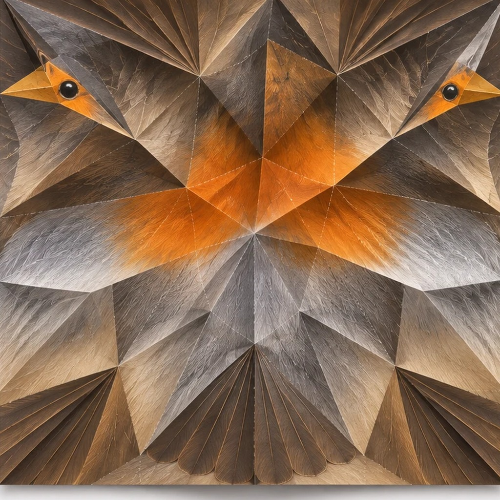
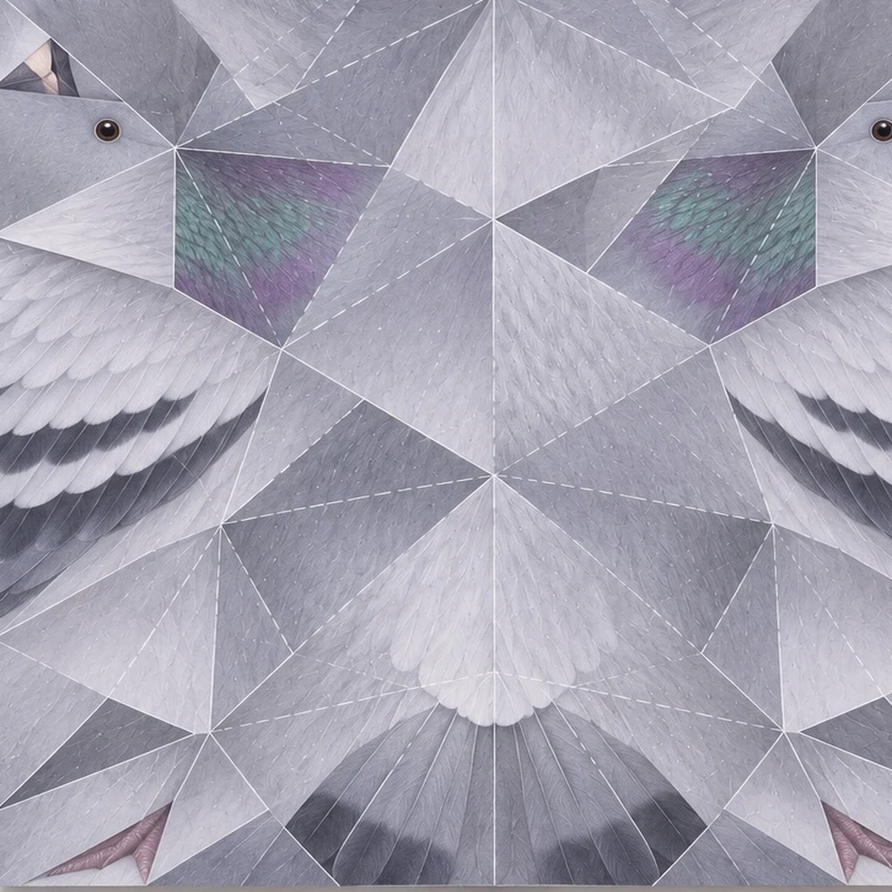
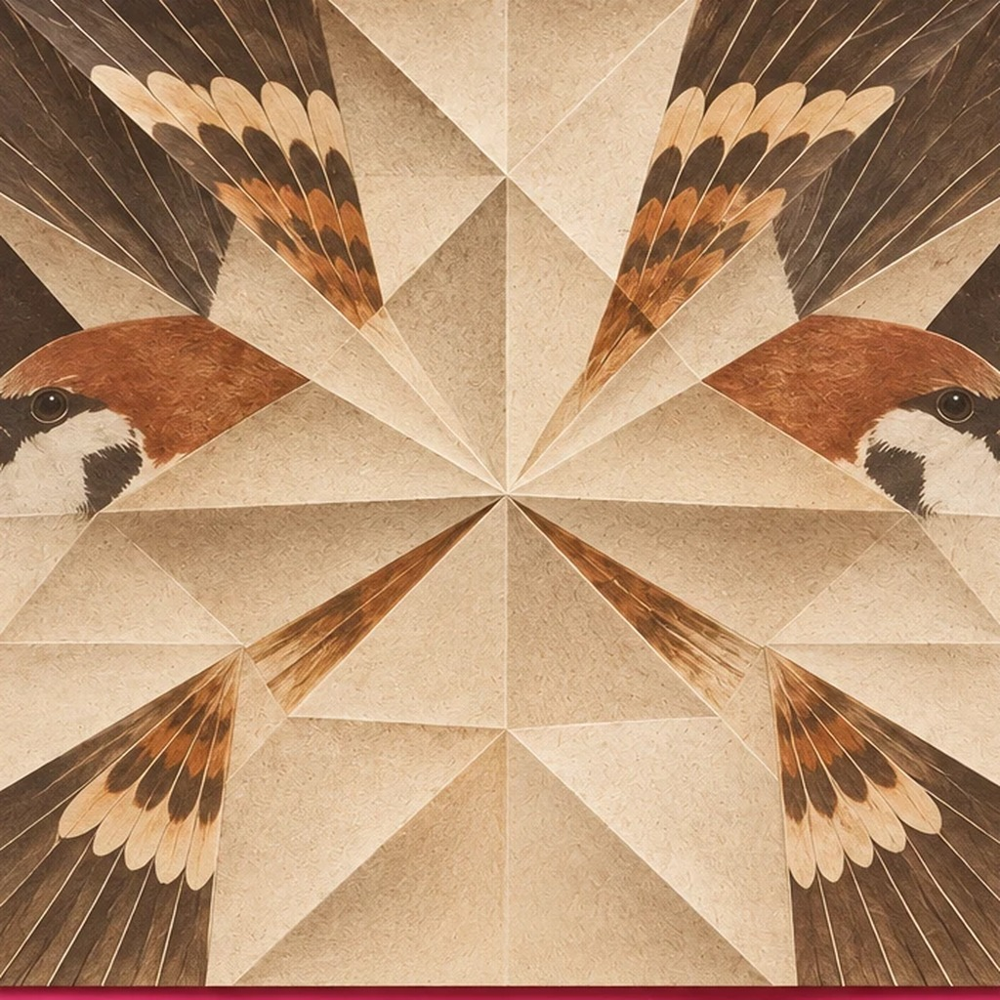

A rice field — Jnanaranjan sahu, CC BY-SA 3.0
Birdoj sur placo de Unueco kaj Konsento (Tjumeno) — RG72, CC BY-SA 4.0
Birds perched on a bare tree in Bidibidi — Oliversamson1, CC BY-SA 4.0



색종이를 눌러 보세요